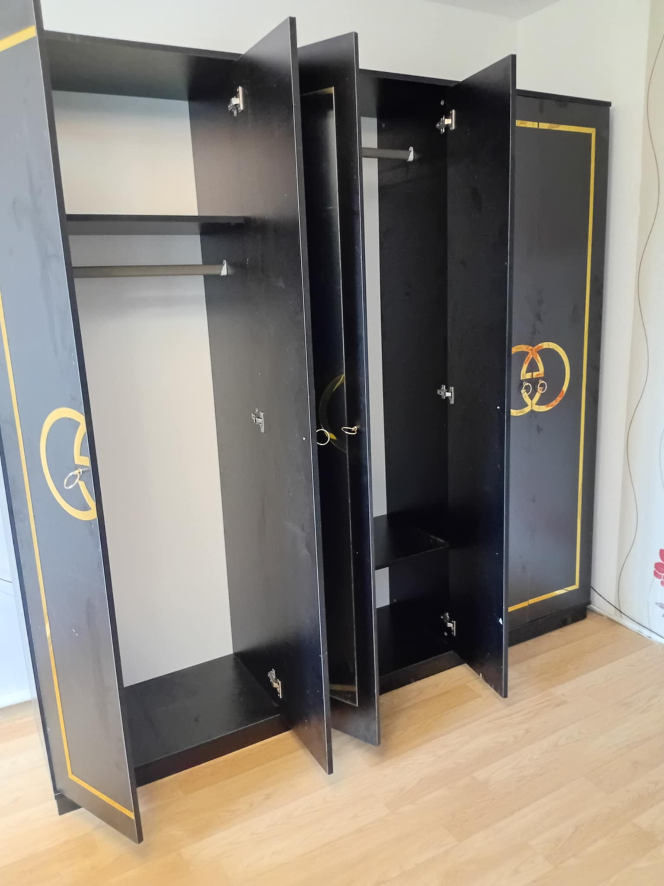

Serviciu Profesional de Montaj Mobilă Targu Mures
Ai achiziționat mobilier nou și te simți copleșit de instrucțiunile complicate sau de multitudinea de piese? Echipa Vali Handyman îți oferă un serviciu rapid, eficient și profesional de montaj mobilă în Targu Mures, transformând piesele din cutie în mobilierul funcțional și estetic pe care ți-l dorești. Indiferent de complexitate sau de producător, ne asigurăm că mobilierul tău va fi asamblat corect și în siguranță.

Ce tipuri de mobilier montăm?
Ne ocupăm de asamblarea și montajul unei game variate de mobilier in Targu Mures, incluzând, dar nelimitându-se la:
- Mobilier de Dormitor: Pat matrimonial, paturi individuale, noptiere, dulapuri (cu uși glisante sau batante), comode, birouri.
- Mobilier de Living: Comode TV, biblioteci, vitrine, dulapuri, etajere, mese de cafea.
- Montaj Mobilier de Bucătărie: Asiguram montajul corpuri inferioare și suspendate, insule de bucătărie, mese și scaune instalare blaturi si a corpurilor adiacente. Asiguram si montajul corpurilor de iluminat si electricasnicelor integrate in mobila ta de bucatarie, fara a mai apele la electricieni si instalatori.
- Montaj Mobilier de Baie: Corpuri de mobilier pentru lavoar, etajere, dulapuri suspendate.
- Montaj Mobilier de Birou: Birouri, scaune de birou, dulapuri de arhivare, etajere.
- Mobilier pentru Copii: Paturi, dulapuri, birouri, mese de înfășat.
- Montaj Dressing-uri și Șifoniere: De la cele modulare la cele mai complexe, asigurăm montajul precis al tuturor componentelor indiferent ca sunt cu usi standard sau cu usi glisante cu oglinda sau fara .
- Mobilier de Grădină: Mese, scaune, șezlonguri, bănci și alte piese de mobilier pentru exterior.
De ce să alegi Vali Handyman pentru montajul mobilei?
- Experiență și Precizie: Avem experiența necesară pentru a asambla corect orice tip de mobilier, indiferent de producător (IKEA, Dedeman, JYSK, Mobexpert, etc.), respectând instrucțiunile și asigurând o fixare solidă.
- Economisești Timp și Efort: Te scutim de ore întregi de efort, frustrare și posibil erori de asamblare. Ne ocupăm noi de tot, rapid și eficient.
- Unelte Profesionale: Suntem dotați cu toate uneltele necesare pentru un montaj rapid și corect, de la șurubelnițe electrice la nivele cu bulă și echipamente de ancorare.
- Atenție la Detalii: Ne asigurăm că fiecare piesă este montată perfect, că ușile și sertarele se închid corect și că mobilierul este stabil și sigur.
- Ancorare de Perete (la cerere): Pentru siguranța ta și a familiei, putem ancora mobilierul înalt de perete, prevenind răsturnarea accidentală.
- Curățenie la Final: Lăsăm întotdeauna zona de lucru curată și ordonată după finalizarea montajului.